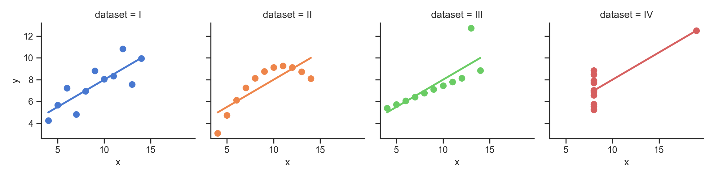
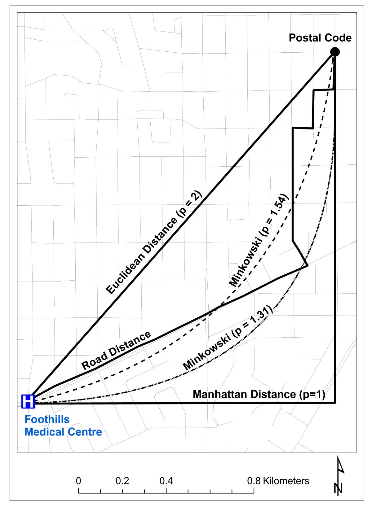

source("../_globals.r")Week 6: Exploratory Data Analysis (EDA)
DSAN 5000: Data Science and Analytics
Section 02
Class Sessions
Schedule
cb_palette = ["#E69F00", "#56B4E9", "#009E73", "#F0E442", "#0072B2", "#D55E00", "#CC79A7"]
from IPython.display import Markdown
def disp(df, floatfmt='g', include_index=True):
return Markdown(
df.to_markdown(
floatfmt=floatfmt,
index=include_index
)
)
def summary_to_df(summary_obj, corner_col = ''):
reg_df = pd.DataFrame(summary_obj.tables[1].data)
reg_df.columns = reg_df.iloc[0]
reg_df = reg_df.iloc[1:].copy()
# Save index col
index_col = reg_df['']
# Drop for now, so it's all numeric
reg_df.drop(columns=[''], inplace=True)
reg_df = reg_df.apply(pd.to_numeric)
my_round = lambda x: round(x, 2)
reg_df = reg_df.apply(my_round)
numeric_cols = reg_df.columns
# Add index col back in
reg_df.insert(loc=0, column=corner_col, value=index_col)
# Sigh. Have to escape | characters?
reg_df.columns = [c.replace("|","\|") for c in reg_df.columns]
return reg_df\[ \DeclareMathOperator*{\argmax}{argmax} \DeclareMathOperator*{\argmin}{argmin} \newcommand{\bigexpect}[1]{\mathbb{E}\mkern-4mu \left[ #1 \right]} \newcommand{\definedas}{\overset{\text{defn}}{=}} \newcommand{\definedalign}{\overset{\phantom{\text{defn}}}{=}} \newcommand{\eqeventual}{\overset{\text{eventually}}{=}} \newcommand{\expect}[1]{\mathbb{E}[#1]} \newcommand{\expectsq}[1]{\mathbb{E}^2[#1]} \newcommand{\fw}[1]{\texttt{#1}} \newcommand{\given}{\mid} \newcommand{\green}[1]{\color{green}{#1}} \newcommand{\heads}{\outcome{heads}} \newcommand{\iqr}{\text{IQR}} \newcommand{\kl}{\text{KL}} \newcommand{\lik}{\mathcal{L}} \newcommand{\mle}{\textsf{ML}} \newcommand{\orange}[1]{\color{orange}{#1}} \newcommand{\outcome}[1]{\textsf{#1}} \newcommand{\param}[1]{{\color{purple} #1}} \newcommand{\pgsamplespace}{\{\green{1},\green{2},\green{3},\purp{4},\purp{5},\purp{6}\}} \newcommand{\prob}[1]{P\left( #1 \right)} \newcommand{\purp}[1]{\color{purple}{#1}} \newcommand{\red}[1]{\color{red}#1} \newcommand{\spacecap}{\; \cap \;} \newcommand{\spacewedge}{\; \wedge \;} \newcommand{\tails}{\outcome{tails}} \newcommand{\Var}[1]{\text{Var}[#1]} \newcommand{\bigVar}[1]{\text{Var}\mkern-4mu \left[ #1 \right]} \]
Today’s Planned Schedule (Section 02):
| Start | End | Topic | Recording | |
|---|---|---|---|---|
| Lecture | 12:30pm | 1:00pm | Week 05 Deeper Dive → | |
| 1:00pm | 1:15pm | (Shorter!) Quiz 3.1 | ||
| 1:15pm | 1:25pm | Introduction to EDA → | ||
| 1:25pm | 1:40pm | Distance Metrics → | ||
| 1:40pm | 2:00pm | Missing Data / Outlier Detection → | ||
| Break! | 2:00pm | 2:10pm | ||
| Lab | 2:10pm | 2:40pm | Lab 5 → | |
| 2:40pm | 3:00pm | Student Presentation |
Week 05 Recap
- NLP
- Tidyverse
- Merging, Reshaping Data
NLP Recap


| doc_id | text |
texts |
Kékkek |
voice |
|
|---|---|---|---|---|---|
| 0 | 0 | 6 | 0 | 1 | |
| 1 | 0 | 0 | 3 | 1 | |
| 2 | 6 | 0 | 0 | 0 |
| doc_id | text |
kekkek |
voice |
||
|---|---|---|---|---|---|
| 0 | 6 | 0 | 1 | ||
| 1 | 0 | 3 | 1 | ||
| 2 | 6 | 0 | 0 |
Your NLP Toolbox
- Processes like lowercasing and stemming allowed the computer to recognize that
textandtextsshould be counted together in this context, since they refer to the same semantic concept. - As we learn NLP, we’ll develop a “toolbox” of ideas, algorithms, and tasks allowing us to quantify, clean, and analyzing text data, where each tool will help us at some level/stage of this analysis:
- Gathering texts
- Preprocessing
- Learning (e.g., estimating parameters for a model) about the texts
- Applying what we learned to downstream tasks we’d like to solve
The Items In Our Toolbox
• Corpus: The collection of documents you’re hoping to analyze
• Books, articles, posts, emails, tweets, etc.
• Vocabulary: The collection of unique tokens across all documents in your corpus
• Segmentation: Breaking a document into parts (paragraphs and/or sentences)
Sentence/Word Level NLP
• Tokenization: Break sentence into tokens
• Stopword Removal: Removing non-semantic (syntactic) tokens like “the”, “and”
• Stemming: Naïvely (but quickly) “chopping off” ends of tokens (e.g., plural → singular)
• Lemmatization: Algorithmically map tokens to linguistic roots (slower than stemming)
Transform textual representation into numeric representation, like the DTM
• Text classification
• Named entity recognition
• Sentiment analysis
Tidyverse
- Think of data science tasks as involving pipelines:
- Tidyverse lets you pipe output from one transformation as the input to another:
raw_data |> select() |> mutate() |> visualize()
raw_data |> filter() |> summarize() |> check_result()Selecting Columns
select() lets you keep only the columns you care about in your current analysis:
library(tidyverse)── Attaching core tidyverse packages ──────────────────────── tidyverse 2.0.0 ──
✔ dplyr 1.1.2 ✔ readr 2.1.4
✔ forcats 1.0.0 ✔ stringr 1.5.0
✔ lubridate 1.9.2 ✔ tibble 3.2.1
✔ purrr 1.0.2 ✔ tidyr 1.3.0
── Conflicts ────────────────────────────────────────── tidyverse_conflicts() ──
✖ dplyr::filter() masks stats::filter()
✖ dplyr::lag() masks stats::lag()
ℹ Use the conflicted package (<http://conflicted.r-lib.org/>) to force all conflicts to become errorstable1# A tibble: 6 × 4
country year cases population
<chr> <dbl> <dbl> <dbl>
1 Afghanistan 1999 745 19987071
2 Afghanistan 2000 2666 20595360
3 Brazil 1999 37737 172006362
4 Brazil 2000 80488 174504898
5 China 1999 212258 1272915272
6 China 2000 213766 1280428583Code
table1 |> select(country, year, population)# A tibble: 6 × 3
country year population
<chr> <dbl> <dbl>
1 Afghanistan 1999 19987071
2 Afghanistan 2000 20595360
3 Brazil 1999 172006362
4 Brazil 2000 174504898
5 China 1999 1272915272
6 China 2000 1280428583Filtering Rows
filter() lets you keep only the rows you care about in your current analysis:
Code
table1 |> filter(year == 2000)# A tibble: 3 × 4
country year cases population
<chr> <dbl> <dbl> <dbl>
1 Afghanistan 2000 2666 20595360
2 Brazil 2000 80488 174504898
3 China 2000 213766 1280428583Code
table1 |> filter(country == "Afghanistan")# A tibble: 2 × 4
country year cases population
<chr> <dbl> <dbl> <dbl>
1 Afghanistan 1999 745 19987071
2 Afghanistan 2000 2666 20595360Merging Data
- The task: Analyze relationship between population and GDP (in 2000)
- The data: One dataset on population in 2000, another on GDP in 2000
- Let’s get the data ready for merging using R
Code
df <- table1 |>
select(country, year, population) |>
filter(year == 2000)
df |> write_csv("assets/pop_2000.csv")
df# A tibble: 3 × 3
country year population
<chr> <dbl> <dbl>
1 Afghanistan 2000 20595360
2 Brazil 2000 174504898
3 China 2000 1280428583Code
gdp_df <- read_csv("https://gist.githubusercontent.com/jpowerj/c83e87f61c166dea8ba7e4453f08a404/raw/29b03e6320bc3ffc9f528c2ac497a21f2d801c00/gdp_2000_2010.csv")Rows: 403 Columns: 4
── Column specification ────────────────────────────────────────────────────────
Delimiter: ","
chr (2): Country Name, Country Code
dbl (2): Year, Value
ℹ Use `spec()` to retrieve the full column specification for this data.
ℹ Specify the column types or set `show_col_types = FALSE` to quiet this message.Code
gdp_df |> head(5)# A tibble: 5 × 4
`Country Name` `Country Code` Year Value
<chr> <chr> <dbl> <dbl>
1 Afghanistan AFG 2010 15936800636.
2 Albania ALB 2000 3632043908.
3 Albania ALB 2010 11926953259.
4 Algeria DZA 2000 54790245601.
5 Algeria DZA 2010 161207268655.Selecting/Filtering in Action
Code
gdp_2000_df <- gdp_df |>
select(`Country Name`,Year,Value) |>
filter(Year == "2000") |>
rename(country=`Country Name`, year=`Year`, gdp=`Value`)
gdp_2000_df |> write_csv("assets/gdp_2000.csv")
gdp_2000_df |> head()# A tibble: 6 × 3
country year gdp
<chr> <dbl> <dbl>
1 Albania 2000 3632043908.
2 Algeria 2000 54790245601.
3 Andorra 2000 1434429703.
4 Angola 2000 9129594819.
5 Antigua and Barbuda 2000 830158769.
6 Argentina 2000 284203750000 Recommended Language: Python
Pandas provides an easy-to-use df.merge(other_df)!
Code
merged_df = pop_df.merge(gdp_df,
on='country', how='left', indicator=True
)
Markdown(merged_df.to_markdown())| country | year_x | population | year_y | gdp | _merge | |
|---|---|---|---|---|---|---|
| 0 | Afghanistan | 2000 | 20595360 | nan | nan | left_only |
| 1 | Brazil | 2000 | 174504898 | 2000 | 6.55421e+11 | both |
| 2 | China | 2000 | 1280428583 | 2000 | 1.21135e+12 | both |
Code
merged_df = pop_df.merge(gdp_df,
on='country', how='inner', indicator=True
)
Markdown(merged_df.to_markdown())| country | year_x | population | year_y | gdp | _merge | |
|---|---|---|---|---|---|---|
| 0 | Brazil | 2000 | 174504898 | 2000 | 6.55421e+11 | both |
| 1 | China | 2000 | 1280428583 | 2000 | 1.21135e+12 | both |
Reshaping Data
Sometimes you can’t merge because one of the datasets looks like the table on the left, but we want it to look like the table on the right
In data-cleaning jargon, this dataset is long (more than one row per observation)
table2 |> write_csv("assets/long_data.csv")
table2 |> head()# A tibble: 6 × 4
country year type count
<chr> <dbl> <chr> <dbl>
1 Afghanistan 1999 cases 745
2 Afghanistan 1999 population 19987071
3 Afghanistan 2000 cases 2666
4 Afghanistan 2000 population 20595360
5 Brazil 1999 cases 37737
6 Brazil 1999 population 172006362In data-cleaning jargon, this dataset is wide (one row per obs; usually tidy)
table1 |> write_csv("assets/wide_data.csv")
table1 |> head()# A tibble: 6 × 4
country year cases population
<chr> <dbl> <dbl> <dbl>
1 Afghanistan 1999 745 19987071
2 Afghanistan 2000 2666 20595360
3 Brazil 1999 37737 172006362
4 Brazil 2000 80488 174504898
5 China 1999 212258 1272915272
6 China 2000 213766 1280428583Reshaping Long-to-Wide in Python: pd.pivot()
Create unique ID for wide version:
Code
long_df['id'] = long_df['country'] + '_' + long_df['year'].apply(str)
# Reorder the columns, so it shows the id first
long_df = long_df[['id','country','year','type','count']]
disp(long_df.head(6))| id | country | year | type | count | |
|---|---|---|---|---|---|
| 0 | Afghanistan_1999 | Afghanistan | 1999 | cases | 745 |
| 1 | Afghanistan_1999 | Afghanistan | 1999 | population | 19987071 |
| 2 | Afghanistan_2000 | Afghanistan | 2000 | cases | 2666 |
| 3 | Afghanistan_2000 | Afghanistan | 2000 | population | 20595360 |
| 4 | Brazil_1999 | Brazil | 1999 | cases | 37737 |
| 5 | Brazil_1999 | Brazil | 1999 | population | 172006362 |
Code
reshaped_df = pd.pivot(long_df,
index='id',
columns='type',
values='count'
)
disp(reshaped_df)| id | cases | population |
|---|---|---|
| Afghanistan_1999 | 745 | 1.99871e+07 |
| Afghanistan_2000 | 2666 | 2.05954e+07 |
| Brazil_1999 | 37737 | 1.72006e+08 |
| Brazil_2000 | 80488 | 1.74505e+08 |
| China_1999 | 212258 | 1.27292e+09 |
| China_2000 | 213766 | 1.28043e+09 |
The Other Direction (Wide-to-Long): pd.melt()
Code
wide_df = pd.read_csv("assets/wide_data.csv")
disp(wide_df)| country | year | cases | population | |
|---|---|---|---|---|
| 0 | Afghanistan | 1999 | 745 | 19987071 |
| 1 | Afghanistan | 2000 | 2666 | 20595360 |
| 2 | Brazil | 1999 | 37737 | 172006362 |
| 3 | Brazil | 2000 | 80488 | 174504898 |
| 4 | China | 1999 | 212258 | 1272915272 |
| 5 | China | 2000 | 213766 | 1280428583 |
Code
long_df = pd.melt(wide_df,
id_vars=['country','year'],
value_vars=['cases','population']
)
disp(long_df.head(6))| country | year | variable | value | |
|---|---|---|---|---|
| 0 | Afghanistan | 1999 | cases | 745 |
| 1 | Afghanistan | 2000 | cases | 2666 |
| 2 | Brazil | 1999 | cases | 37737 |
| 3 | Brazil | 2000 | cases | 80488 |
| 4 | China | 1999 | cases | 212258 |
| 5 | China | 2000 | cases | 213766 |
Wide-to-Long in R: gather()
Code
table1# A tibble: 6 × 4
country year cases population
<chr> <dbl> <dbl> <dbl>
1 Afghanistan 1999 745 19987071
2 Afghanistan 2000 2666 20595360
3 Brazil 1999 37737 172006362
4 Brazil 2000 80488 174504898
5 China 1999 212258 1272915272
6 China 2000 213766 1280428583Code
long_df <- gather(table1,
key = "variable",
value = cases,
-c(country, year)
)
long_df |> head()# A tibble: 6 × 4
country year variable cases
<chr> <dbl> <chr> <dbl>
1 Afghanistan 1999 cases 745
2 Afghanistan 2000 cases 2666
3 Brazil 1999 cases 37737
4 Brazil 2000 cases 80488
5 China 1999 cases 212258
6 China 2000 cases 213766Quiz Time!
Introduction to EDA
Exploratory Data Analysis (EDA)
- In contrast to confirmatory data analysis
Exploratory Data Analysis (EDA)
- So you have reasonably clean data… now what?

What is EDA?
From IBM:
- Look at data before making any assumptions1
- Screen data and identify obvious errors
- Better understand patterns within the data
- Detect outliers or anomalous events
- Find interesting relations among the variables.
Overarching goal to keep in mind: does this data have what I need to address my research question?
Assumption-Free Analysis?
Important question for EDA: Is it actually possible to analyze data without assumptions?2
Empirical results are laden with values and theoretical commitments.
(Boyd and Bogen 2021)
Ex: Estimates of optimal tax rates in Econ journals vs. Economist ideology scores
Rows: 21 Columns: 4
── Column specification ────────────────────────────────────────────────────────
Delimiter: ","
dbl (4): id, ideology, elast, tr_est
ℹ Use `spec()` to retrieve the full column specification for this data.
ℹ Specify the column types or set `show_col_types = FALSE` to quiet this message.Statistical EDA
- Iterative process: Ask questions of the data, find answers, generate more questions
- You’re probably already used to Mean and Variance: Fancier EDA/robustness methods build upon these two!
- Why do we need to visualize? Can’t we just use mean, \(R^2\)?
- …Enter Anscombe’s Quartet
import pandas as pd
import numpy as np
import matplotlib.pyplot as plt
import seaborn as sns
sns.set_theme(style="ticks")
# https://towardsdatascience.com/how-to-use-your-own-color-palettes-with-seaborn-a45bf5175146
sns.set_palette(sns.color_palette(cb_palette))
# Load the example dataset for Anscombe's quartet
anscombe_df = sns.load_dataset("anscombe")
#print(anscombe_df)
# Show the results of a linear regression within each dataset
anscombe_plot = sns.lmplot(
data=anscombe_df, x="x", y="y", col="dataset", hue="dataset",
col_wrap=4, palette="muted", ci=None,
scatter_kws={"s": 50, "alpha": 1},
height=3
);/Users/jpj/.virtualenvs/r-reticulate/lib/python3.11/site-packages/seaborn/_oldcore.py:1498: FutureWarning: is_categorical_dtype is deprecated and will be removed in a future version. Use isinstance(dtype, CategoricalDtype) instead
if pd.api.types.is_categorical_dtype(vector):
/Users/jpj/.virtualenvs/r-reticulate/lib/python3.11/site-packages/seaborn/_oldcore.py:1498: FutureWarning: is_categorical_dtype is deprecated and will be removed in a future version. Use isinstance(dtype, CategoricalDtype) instead
if pd.api.types.is_categorical_dtype(vector):
/Users/jpj/.virtualenvs/r-reticulate/lib/python3.11/site-packages/seaborn/_oldcore.py:1498: FutureWarning: is_categorical_dtype is deprecated and will be removed in a future version. Use isinstance(dtype, CategoricalDtype) instead
if pd.api.types.is_categorical_dtype(vector):anscombe_plot;
The Scariest Dataset of All Time

# Compute dataset means
my_round = lambda x: round(x,2)
data_means = anscombe_df.groupby('dataset').agg(
x_mean = ('x', np.mean),
y_mean = ('y', np.mean)
).apply(my_round)<string>:1: FutureWarning: The provided callable <function mean at 0x1184f9120> is currently using SeriesGroupBy.mean. In a future version of pandas, the provided callable will be used directly. To keep current behavior pass the string "mean" instead.
<string>:1: FutureWarning: The provided callable <function mean at 0x1184f9120> is currently using SeriesGroupBy.mean. In a future version of pandas, the provided callable will be used directly. To keep current behavior pass the string "mean" instead.disp(data_means, floatfmt='.2f')| dataset | x_mean | y_mean |
|---|---|---|
| I | 9.00 | 7.50 |
| II | 9.00 | 7.50 |
| III | 9.00 | 7.50 |
| IV | 9.00 | 7.50 |
# Compute dataset SDs
data_sds = anscombe_df.groupby('dataset').agg(
x_mean = ('x', np.std),
y_mean = ('y', np.std),
).apply(my_round)<string>:2: FutureWarning: The provided callable <function std at 0x1184f9260> is currently using SeriesGroupBy.std. In a future version of pandas, the provided callable will be used directly. To keep current behavior pass the string "std" instead.
<string>:2: FutureWarning: The provided callable <function std at 0x1184f9260> is currently using SeriesGroupBy.std. In a future version of pandas, the provided callable will be used directly. To keep current behavior pass the string "std" instead.disp(data_sds, floatfmt='.2f')| dataset | x_mean | y_mean |
|---|---|---|
| I | 3.32 | 2.03 |
| II | 3.32 | 2.03 |
| III | 3.32 | 2.03 |
| IV | 3.32 | 2.03 |
import tabulate
from IPython.display import HTML
corr_matrix = anscombe_df.groupby('dataset').corr().apply(my_round)
#Markdown(tabulate.tabulate(corr_matrix))
HTML(corr_matrix.to_html())| x | y | ||
|---|---|---|---|
| dataset | |||
| I | x | 1.00 | 0.82 |
| y | 0.82 | 1.00 | |
| II | x | 1.00 | 0.82 |
| y | 0.82 | 1.00 | |
| III | x | 1.00 | 0.82 |
| y | 0.82 | 1.00 | |
| IV | x | 1.00 | 0.82 |
| y | 0.82 | 1.00 |
It Doesn’t End There…
import statsmodels.formula.api as smf
summary_dfs = []
for cur_ds in ['I','II','III','IV']:
ds1_df = anscombe_df.loc[anscombe_df['dataset'] == "I"].copy()
# Fit regression model (using the natural log of one of the regressors)
results = smf.ols('y ~ x', data=ds1_df).fit()
# Get R^2
rsq = round(results.rsquared, 2)
# Inspect the results
summary = results.summary()
summary.extra_txt = None
summary_df = summary_to_df(summary, corner_col = f'Dataset {cur_ds}<br>R^2 = {rsq}')
summary_dfs.append(summary_df)/Users/jpj/.virtualenvs/r-reticulate/lib/python3.11/site-packages/scipy/stats/_stats_py.py:1806: UserWarning: kurtosistest only valid for n>=20 ... continuing anyway, n=11
warnings.warn("kurtosistest only valid for n>=20 ... continuing "
/Users/jpj/.virtualenvs/r-reticulate/lib/python3.11/site-packages/scipy/stats/_stats_py.py:1806: UserWarning: kurtosistest only valid for n>=20 ... continuing anyway, n=11
warnings.warn("kurtosistest only valid for n>=20 ... continuing "
/Users/jpj/.virtualenvs/r-reticulate/lib/python3.11/site-packages/scipy/stats/_stats_py.py:1806: UserWarning: kurtosistest only valid for n>=20 ... continuing anyway, n=11
warnings.warn("kurtosistest only valid for n>=20 ... continuing "
/Users/jpj/.virtualenvs/r-reticulate/lib/python3.11/site-packages/scipy/stats/_stats_py.py:1806: UserWarning: kurtosistest only valid for n>=20 ... continuing anyway, n=11
warnings.warn("kurtosistest only valid for n>=20 ... continuing "disp(summary_dfs[0], include_index=False)| Dataset I R^2 = 0.67 |
coef | std err | t | P>|t| | [0.025 | 0.975] |
|---|---|---|---|---|---|---|
| Intercept | 3 | 1.12 | 2.67 | 0.03 | 0.46 | 5.54 |
| x | 0.5 | 0.12 | 4.24 | 0 | 0.23 | 0.77 |
disp(summary_dfs[1], include_index=False)| Dataset II R^2 = 0.67 |
coef | std err | t | P>|t| | [0.025 | 0.975] |
|---|---|---|---|---|---|---|
| Intercept | 3 | 1.12 | 2.67 | 0.03 | 0.46 | 5.54 |
| x | 0.5 | 0.12 | 4.24 | 0 | 0.23 | 0.77 |
disp(summary_dfs[2], include_index=False)| Dataset III R^2 = 0.67 |
coef | std err | t | P>|t| | [0.025 | 0.975] |
|---|---|---|---|---|---|---|
| Intercept | 3 | 1.12 | 2.67 | 0.03 | 0.46 | 5.54 |
| x | 0.5 | 0.12 | 4.24 | 0 | 0.23 | 0.77 |
disp(summary_dfs[3], include_index=False)| Dataset IV R^2 = 0.67 |
coef | std err | t | P>|t| | [0.025 | 0.975] |
|---|---|---|---|---|---|---|
| Intercept | 3 | 1.12 | 2.67 | 0.03 | 0.46 | 5.54 |
| x | 0.5 | 0.12 | 4.24 | 0 | 0.23 | 0.77 |
Normalization
Code
num_students <- 30
student_ids <- seq(from = 1, to = num_students)
# So we have the censored Normal pdf/cdf
library(crch)
gen_test_scores <- function(min_pts, max_pts) {
score_vals_unif <- runif(num_students, min_pts, max_pts)
unif_mean <- mean(score_vals_unif)
unif_sd <- sd(score_vals_unif)
# Resample, this time censored normal dist
score_vals <- round(rcnorm(num_students, mean=unif_mean, sd=unif_sd, left=min_pts, right=max_pts), 2)
return(score_vals)
}
# Test 1
t1_min <- 0
t1_max <- 268.3
t1_score_vals <- gen_test_scores(t1_min, t1_max)
t1_mean <- mean(t1_score_vals)
t1_sd <- sd(t1_score_vals)
get_t1_pctile <- function(s) round(100 * ecdf(t1_score_vals)(s), 1)
# Test 2
t2_min <- -1
t2_max <- 1.2
t2_score_vals <- gen_test_scores(t2_min, t2_max)
t2_mean <- mean(t2_score_vals)
t2_sd <- sd(t2_score_vals)
get_t2_pctile <- function(s) round(100 * ecdf(t2_score_vals)(s), 1)
score_df <- tibble(
id=student_ids,
t1_score=t1_score_vals,
t2_score=t2_score_vals
)
score_df <- score_df |> arrange(desc(t1_score))“I got a 238.25 on the first test!” 🤩
“But only a 0.31 on the second” 😭
# A tibble: 6 × 3
id t1_score t2_score
<int> <dbl> <dbl>
1 17 268. -0.54
2 27 258. -0.33
3 26 246. -0.55
4 5 238. 0.31
5 11 207. -0.02
6 16 205. -0.06score_df <- score_df |>
mutate(
t1_z_score = round((t1_score - t1_mean) / t1_sd, 2),
t2_z_score = round((t2_score - t2_mean) / t2_sd, 2),
t1_pctile = get_t1_pctile(t1_score),
t2_pctile = get_t2_pctile(t2_score)
) |>
relocate(t1_pctile, .after = t1_score) |>
relocate(t2_pctile, .after = t2_score)“I scored higher than 90% of students on the first test! 🤩
“And higher than 60% on the second!” 😎
# A tibble: 6 × 7
id t1_score t1_pctile t2_score t2_pctile t1_z_score t2_z_score
<int> <dbl> <dbl> <dbl> <dbl> <dbl> <dbl>
1 17 268. 100 -0.54 30 1.87 -0.82
2 27 258. 96.7 -0.33 46.7 1.73 -0.52
3 26 246. 93.3 -0.55 26.7 1.54 -0.83
4 5 238. 90 0.31 60 1.44 0.39
5 11 207. 86.7 -0.02 56.7 0.98 -0.08
6 16 205. 83.3 -0.06 50 0.96 -0.14Scaling
The percentile places everyone at evenly-spaced intervals from 0 to 100:
# https://community.rstudio.com/t/number-line-in-ggplot/162894/4
# Add a binary indicator to track "me" (student #8)
whoami <- 29
score_df <- score_df |>
mutate(is_me = as.numeric(id == whoami))
library(ggplot2)
t1_line_data <- tibble(
x = score_df$t1_pctile,
y = 0,
me = score_df$is_me
)
ggplot(t1_line_data, aes(x, y, col=factor(me), shape=factor(me))) +
geom_point(aes(size=g_pointsize)) +
scale_x_continuous(breaks=seq(from=0, to=100, by=10)) +
scale_color_discrete(c(0,1)) +
dsan_theme("half") +
theme(
legend.position="none",
#rect = element_blank(),
#panel.grid = element_blank(),
axis.title.y = element_blank(),
axis.text.y = element_blank(),
axis.line.y = element_blank(),
axis.ticks.y=element_blank(),
panel.spacing = unit(0, "mm"),
plot.margin = margin(-35, 0, 0, 0, "pt"),
) +
labs(
x = "Test 1 Percentile"
) +
coord_fixed(ratio = 100)
But what if we want to see their absolute performance, on a 0 to 100 scale?
library(scales)
Attaching package: 'scales'The following object is masked from 'package:purrr':
discardThe following object is masked from 'package:readr':
col_factorscore_df <- score_df |>
mutate(
t1_rescaled = rescale(
t1_score,
from = c(t1_min, t1_max),
to = c(0, 100)
),
t2_rescaled = rescale(
t2_score,
from = c(t2_min, t2_max),
to = c(0, 100)
)
)
# Place "me" last so that it gets plotted last
t1_rescaled_line_data <- tibble(
x = score_df$t1_rescaled,
y = 0,
me = score_df$is_me
) |> arrange(me)
ggplot(t1_rescaled_line_data, aes(x,y,col=factor(me), shape=factor(me))) +
geom_point(size=g_pointsize) +
scale_x_continuous(breaks=seq(from=0, to=100, by=10)) +
dsan_theme("half") +
expand_limits(x=c(0, 100)) +
theme(
legend.position="none",
#rect = element_blank(),
#panel.grid = element_blank(),
axis.title.y = element_blank(),
axis.text.y = element_blank(),
axis.line.y = element_blank(),
axis.ticks.y=element_blank(),
#panel.spacing = unit(0, "mm"),
#plot.margin = margin(-40, 0, 0, 0, "pt"),
) +
labs(
x = "Test 1 Score (Rescaled to 0-100)"
) +
coord_fixed(ratio = 100)
Shifting / Recentering
- Percentiles tell us how the students did in terms of relative rankings
- Rescaling lets us reinterpret the boundary points
- What about with respect to some absolute baseline? For example, how well they did relative to the mean \(\mu\)?
\[ x'_i = x_i - \mu \]
- But we’re still “stuck” in units of the test: is \(x'_i = 0.3\) (0.3 points above the mean) “good”? What about \(x'_j = -2568\) (2568 points below the mean)? How “bad” is this case?
Shifting and Scaling: The \(z\)-Score
- Enter the \(z\)-score!
\[ z_i = \frac{x_i - \mu}{\sigma} \]
- Unit of original \(x_i\) values: ?
- Unit of \(z\)-score: standard deviations from the mean!
t1_z_score_line_data <- tibble(
x = score_df$t1_z_score,
y = 0,
me = score_df$is_me
) |> arrange(me)
ggplot(t1_z_score_line_data, aes(x, y, col=factor(me), shape=factor(me))) +
geom_point(aes(size=g_pointsize)) +
scale_x_continuous(breaks=c(-2,-1,0,1,2)) +
dsan_theme("half") +
theme(
legend.position="none",
#rect = element_blank(),
#panel.grid = element_blank(),
axis.title.y = element_blank(),
axis.text.y = element_blank(),
axis.line.y = element_blank(),
axis.ticks.y=element_blank(),
plot.margin = margin(-20,0,0,0,"pt")
) +
expand_limits(x=c(-2,2)) +
labs(
x = "Test 1 Z-Score"
) +
coord_fixed(ratio = 3)
Distance Metrics


Why All The Worry About Units?
- Euclidean Distance
- Manhattan Distance
- Spherical Distance vs. Straight-Line Distance
Why Should We Worry About This?


Distances Are Metaphors We Use To Accomplish Something
Which Metric(s) Should We Use?

\(L^p\)-norm:
\[ || \mathbf{x} - \mathbf{y} ||_p = \left(\sum_{i=1}^n |x_i - y_i|^p \right)^{1/p} \]
Edit Distance, e.g., Hamming distance:
\[ \begin{array}{c|c|c|c|c|c} x & \green{1} & \green{1} & \red{0} & \red{1} & 1 \\ \hline & ✅ & ✅ & ❌ & ❌ & ✅ \\\hline y & \green{1} & \green{1} & \red{1} & \red{0} & 1 \\ \end{array} \; \leadsto d(x,y) = 2 \]
KL Divergence (Probability distributions):
\[ \begin{align*} \kl(P \parallel Q) &= \sum_{x \in \mathcal{R}_X}P(x)\log\left[ \frac{P(x)}{Q(x)} \right] \\ &\neq \kl(Q \parallel P) \; (!) \end{align*} \]
Onto the Math! \(L^p\)-Norms
- Euclidean distance = \(L^2\)-norm:
\[ || \mathbf{x} - \mathbf{y} ||_2 = \sqrt{\sum_{i=1}^n(x_i-y_i)^2} \]
- Manhattan distance = \(L^1\)-norm:
\[ || \mathbf{x} - \mathbf{y} ||_1 = \sum_{i=1}^n |x_i - y_i| \]
- The maximum(!) = \(L^\infty\)-norm:
\[ || \mathbf{x} - \mathbf{y} ||_{\infty} = \lim_{p \rightarrow \infty}\left[|| \mathbf{x} - \mathbf{y} ||_p\right] = \max\{|x_1-y_1|, \ldots, |x_n - y_n|\} \]
Top Secret Non-Well-Defined Yet Useful Norms
- The “\(L^0\)-norm”
\[ || \mathbf{x} - \mathbf{y} ||_0 = \mathbf{1}\left[x_i \neq y_i\right] \]
- The “\(L^{1/2}\)-norm”
\[ || \mathbf{x} - \mathbf{y} ||_{1/2} = \left(\sum_{i=1}^n \sqrt{x_i - y_i} \right)^2 \]
- What’s wrong with these norms? (Re-)enter the Triangle Inequality! \(d\) defines a norm iff
\[ \forall a, b, c \left[ d(a,c) \leq d(a,b) + d(b,c) \right] \]
Visualizing “circles” in \(L^p\) space:
import matplotlib.pyplot as plt
import numpy as np
#p_values = [0., 0.5, 1, 1.5, 2, np.inf]
p_values = [0.5, 1, 2, np.inf]
x, y = np.meshgrid(np.linspace(-3, 3, num=101), np.linspace(-3, 3, num=101))
fig, axes = plt.subplots(ncols=(len(p_values) + 1)// 2,
nrows=2, figsize=(5, 5))
for p, ax in zip(p_values, axes.flat):
if np.isinf(p):
z = np.maximum(np.abs(x),np.abs(y))
else:
z = ((np.abs((x))**p) + (np.abs((y))**p))**(1./p)
ax.contourf(x, y, z, 30, cmap='bwr')
ax.contour(x, y, z, [1], colors='red', linewidths = 2)
ax.title.set_text(f'p = {p}')
ax.set_aspect('equal', 'box')
plt.tight_layout()
#plt.subplots_adjust(hspace=0.35, wspace=0.25)
plt.show()To go beyond this, and explore how \(L^p\) “quasi-norms” can be extremely useful, take DSAN 6100: Optimization!
One place they can be useful? You guessed it: facial recognition algorithms (Guo, Wang, and Ruan 2013)
Missing Values
The Value of Studying
- You are a teacher trying to assess the causal impact of studying on homework scores
- Let \(S\) = hours of studying, \(H\) = homework score

- So far so good: we could estimate the relationship via (e.g.) regression
\[ h_i = \beta_0 + \beta_1 s_i + \varepsilon_i \]
My Dog Ate My Homework
- The issue: for some students \(h_i\) is missing, since their dog ate their homework
- Let \(D = \begin{cases}1 &\text{if dog ate homework} \\ 0 &\text{otherwise}\end{cases}\)
- This means we don’t observe \(H\) but \(H^* = \begin{cases} H &\text{if }D = 0 \\ \texttt{NA} &\text{otherwise}\end{cases}\)
- In the easy case, let’s say that dogs eat homework at random (i.e., without reference to \(S\) or \(H\)). Then we say \(H\) is “missing at random”. Our PGM now looks like:

My Dog Ate My Homework Because of Reasons

There are scarier alternatives, though! What if…
Dogs eat homework because their owner studied so much that the dog got ignored?

Dogs hate sloppy work, and eat bad homework that would have gotten a low score

Noisy homes (\(Z = 1\)) cause dogs to get agitated and eat homework more often, and students do worse

Outlier Detection
Tukey’s Rule
- Given the first quartile (25th percentile) \(Q_1\), and the third quartile (75th percentile) \(Q_2\), define the Inter-Quartile Range as
\[ \iqr = Q_3 - Q_1 \]
- Then an outlier is a point more than \(1.5 \cdot \iqr\) away from \(Q_1\) or \(Q_3\); outside of
\[ [Q_1 - 1.5 \cdot \iqr, \; Q_3 + 1.5 \cdot \iqr] \]
- This is the outlier rule used for box-and-whisker plots:
library(ggplot2)
library(tibble)
library(dplyr)
# Generate normal data
dist_df <- tibble(Score=rnorm(95), Distribution="N(0,1)")
# Add outliers
outlier_dist_sd <- 6
outlier_df <- tibble(Score=rnorm(5, 0, outlier_dist_sd), Distribution=paste0("N(0,",outlier_dist_sd,")"))
data_df <- bind_rows(dist_df, outlier_df)
# Compute iqr and outlier range
q1 <- quantile(data_df$Score, 0.25)
q3 <- quantile(data_df$Score, 0.75)
iqr <- q3 - q1
iqr_cutoff_lower <- q1 - 1.5 * iqr
iqr_cutoff_higher <- q3 + 1.5 * iqr
is_outlier <- function(x) (x < iqr_cutoff_lower) || (x > iqr_cutoff_higher)
data_df['Outlier'] <- sapply(data_df$Score, is_outlier)
#data_df
ggplot(data_df, aes(x=Score, y=factor(0))) +
geom_boxplot(outlier.color = NULL, linewidth = g_linewidth, outlier.size = g_pointsize / 1.5) +
geom_jitter(data=data_df, aes(col = Distribution, shape=Outlier), size = g_pointsize / 1.5, height=0.15, alpha = 0.8, stroke = 1.5) +
geom_vline(xintercept = iqr_cutoff_lower, linetype = "dashed") +
geom_vline(xintercept = iqr_cutoff_higher, linetype = "dashed") +
#coord_flip() +
dsan_theme("half") +
theme(
axis.title.y = element_blank(),
axis.ticks.y = element_blank(),
axis.text.y = element_blank()
) +
scale_x_continuous(breaks=seq(from=-3, to=3, by=1)) +
scale_shape_manual(values=c(16, 4))3-Sigma Rule
- Recall the 68-95-99.7 Rule
- The 3-Sigma Rule says simply: throw away anything more than 3 standard deviations away from the mean (beyond range that should contain 99.7% of data)
mean_score <- mean(data_df$Score)
sd_score <- sd(data_df$Score)
lower_cutoff <- mean_score - 3 * sd_score
upper_cutoff <- mean_score + 3 * sd_score
# For printing / displaying
mean_score_str <- sprintf(mean_score, fmt='%.2f')
sd_score_str <- sprintf(sd_score, fmt='%.2f')
ggplot(data_df, aes(x=Score)) +
geom_density(linewidth = g_linewidth) +
#geom_boxplot(outlier.color = NULL, linewidth = g_linewidth, outlier.size = g_pointsize / 1.5) +
#geom_jitter(data=data_df, aes(y = factor(0), col = dist), size = g_pointsize / 1.5, height=0.25) +
#coord_flip() +
dsan_theme("half") +
theme(
axis.title.y = element_blank(),
#axis.ticks.y = element_blank(),
#axis.text.y = element_blank()
) +
#geom_boxplot() +
geom_vline(xintercept = mean_score, linetype = "dashed") +
geom_vline(xintercept = lower_cutoff, linetype = "dashed") +
geom_vline(xintercept = upper_cutoff, linetype = "dashed") +
geom_jitter(data=data_df, aes(x = Score, y = 0, col = Distribution, shape = Outlier),
size = g_pointsize / 1.5, height=0.025, alpha=0.8, stroke=1.5) +
scale_x_continuous(breaks=seq(from=-3, to=3, by=1)) +
scale_shape_manual(values=c(16, 4)) +
labs(
title = paste0("Six-Sigma Rule, mu = ",mean_score_str,", sd = ",sd_score_str),
y = "Density"
)Missing Data + Outliers: Most Important Takeaway!
- Always have a working hypothesis about the Data-Generating Process!
- Literally the solution to… 75% of all data-related headaches
- What variables explain why this data point is missing?
- What variables explain why this data point is an outlier?
Driving the Point Home

Presumed DGP:

Actual DGP:

Footnotes
(See next slide)↩︎
(When I started as a PhD student in Computer Science, I would have answered “yes”. Now that my brain has been warped by social science, I’m not so sure.)↩︎
Good thing this guy isn’t the father of modern statistics or anything like that 😮💨
(For more historical scariness take my DSAN 5450: Data Ethics and Policy course next semester! 😉)↩︎